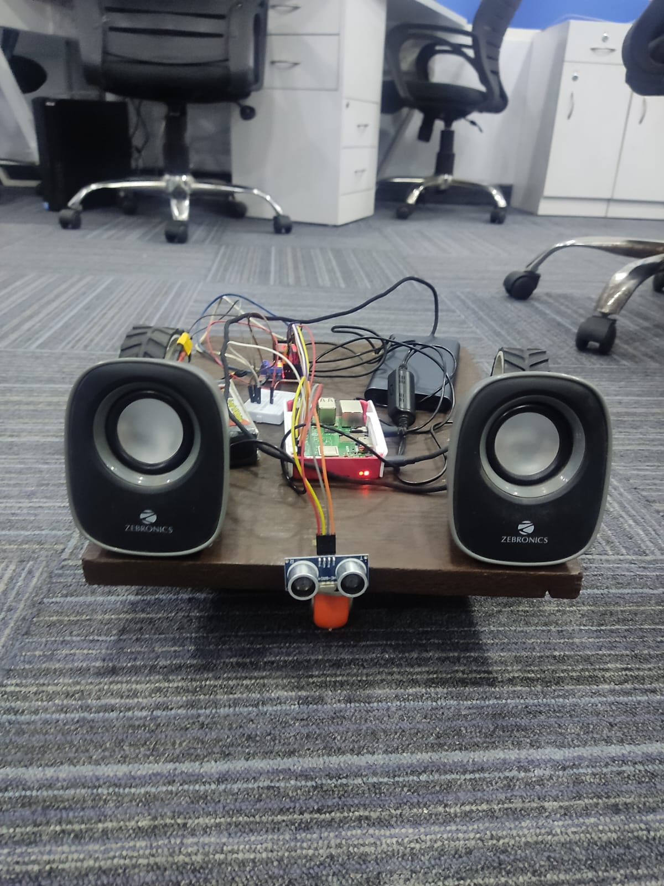

Projects
Here are some of the projects I've worked on:
-
ROBO ASSISTANT X
Robot Assistant X is a voice assistant robot developed as a collaborative project. In today's world, where artificial intelligence and robotics are rapidly advancing, Robot Assistant X represents a significant step forward in human-machine interaction. The project combines Natural Language Processing (NLP) with robust hardware to create a user-friendly voice assistant robot. The goal is to provide a tool that is not only efficient but also easy for regular users to interact with.
Please find more details and code implementation here. -
Audio Aura
In the dynamic realm of music, knowing what resonates with audiences is crucial. Our data-driven exploration helps us uncover trends and insights driving musical achievements. With innovative analytics and visualization, we navigate through genre preferences, artist popularity, musical scales, and emerging trends. The project is a web application , developed in python and it make use of streamlit.
Please find the website here. Please find more details about the project and implementation for the same here. -
Archaic Keys: Unlocking Language Diversity
In a world increasingly reliant on digital communication, ensuring inclusive linguistic support is paramount. Our project endeavors to bridge this gap by developing robust Natural Language Processing (NLP) models tailored specifically for underrepresented languages. Focused initially on Malayalam and Nepali, our project extends beyond mere academic pursuits; it responds to a pressing need for tools accommodating archaic characters, ligatures, and other linguistic nuances often overlooked by existing platforms. Frontend is developed using flutter, backend is developed using
Please find the website here. Please find more details about the project and implementation for the same frontend code and backend code. -
Vizard Visualizer(V^2)
This is a project developed during my BE-CSE final year. It is to predict whether a person is wearing mask or not. If the person is not wearing mask then it will give proper suggestion. To predict this we have created a model that make use of Tensorflow. The training accuracy of the model is 90% and the validation accuracy of the model is 94%. The accuracy can be increased by increasing the number of epochs and by increasing the number of neurons of the model. It has 5 CNN layers to abstract the features from the images and sequential output layer. The images are collected from internet and is split into 8:2 for training and testing set. Since we have collected data from internet, so we have done Image Augmentation (to artificially increase the dataset during the processing time) and to train model through different ways (zoom level, rotate, rescale, horizontal flip etc.). This is done with the help of Image Data Generator, so that we can process the image in a batch at once. Also to avoid the overfitting of the model we make use of the Drop Out (a process to drop out the neurons from the model). The model is then saved with .h5 extension so that it can be loaded and used in the websites. To create a website we have make use of python Flask, HTML, CSS and bootstrap. The model is also converted into the .tflite extension with the help of the Tensorflow lite converter. So that our model can be used in the mobile devices, Rasberry Pi and other micro processors. Since, we have created our own model, this model can also be used to create other model(Transfer Learning). The transfer learning can be done with the help of Inception V3 Keras.
Please find the implementation here. -
COVID-19 Prediction
This is a project made during covid-19 crisis. It can be used to predict whether a customer is suffering from corona or not. For the prediction it uses deep learning developed using Tensorflow. To make this model work in the android devices the Tensorflow saved model is converted into the .tflite extension by making use of TFLiteConverter. It also has other features like entertainment, chat bot, Voice assistant etc. It also make use of google firebase database and google text-to-speech API.
Please find the implementation for the same here. -
Search Engine
This is a project developed to illustrate the basic implementation of the search engine. It is devloped in Python. It uses Selenium to demonstrate the concepts of Web Scraping and Web Crawling.
Please find the implementation for the same here.